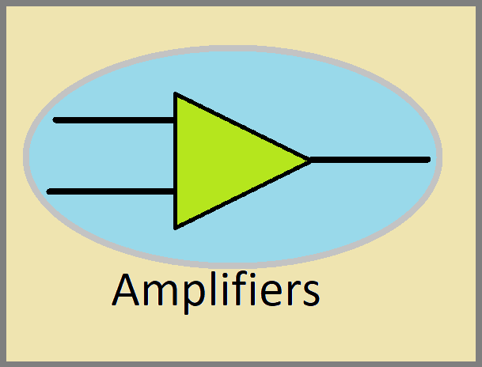

This is my nisu amp class a.
Here you can see my recent public updates on my nisu amp class a.
If you chose to build this amplifier you must read the text at the bottom.
and you must install heatsinks and fuses on heat generating components (ex the main power transistor)
the optimal operating range is 10v-25v and 1Ω-8Ω speakers / coils.
The output power is around 2w at 10w input
(WARNING AT 10W INPUT THE AMP MAKES 8W OF HEAT.
IF THERE IS NO appropriate HEAT SINK IT CAN BE A FIRE HAZARD)
links
I take no responsibility for damage caused by these circuits since these are experimental and might not work as intended.
THESE amplifiers ARE NOT CERTIFEID IN ANY WAY AND MIGHT FAIL AFTER A LONG TIME OR DUE TO A LACK OF EXTRA SAFETY FEATURS SUCH AS FUSES ON EVERY IN OR OUTPUT AND ISOLATED POWERSUPPLYS.
BUILD AT YOUR OWN RISK.
ONLY BUILD THEM IF YOU UNDERSTAND THE CIRCUITS FULLY AND KNOW WHAT YOU ARE DOING.